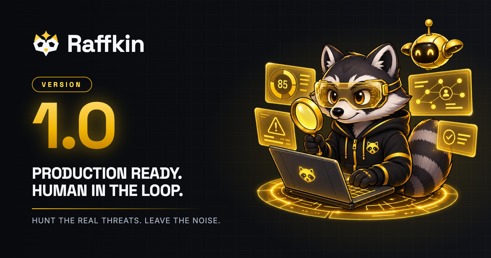

Community blog
Raffkin 1.0: An Agentic SOC Analyst, With a Human in the Loop
- Three skills, named for the jobs they do
- SIEM data is untrusted input
- Nothing above is a claim
- Get Raffkin 1.0
Today we're releasing Raffkin 1.0, an open-source agentic SOC skill suite for Exabeam New-Scale. Raffkin runs inside the coding agent you already use, Claude Code or OpenAI Codex. It takes on the alert, queue and detection work that buries SOC teams, and it leaves every consequential decision with a human.
1.0 is the first release with a stable surface, and it enters the community at Production level.
Three skills, named for the jobs they do
soc-investigate: the analyst. It takes one alert or case from first look to written verdict. It pulls the events, pivots on the entities it finds, weighs the activity against what's normal for them, and tests a benign explanation against a malicious one. The report cites its evidence for every line.triage-cases: the shift lead. It sweeps the open queue, groups cases by attack shape, ranks them by corroborated signal rather than raw risk score, and hands back a short "start here" list plus the noise worth tuning. It's read-only across the sweep and never closes in bulk.rule-tuning: the detection engineer. It finds the rules quietly wasting analyst attention and proposes the specific change, mapped to real Exabeam mechanics. It only proposes: there is no rule-write path.
Ask in plain language, such as "investigate alert 8f67ee43" or "triage the queue", and the right skill picks it up.
SIEM data is untrusted input
An attacker can write to your logs: a user-agent string, a case note, a "baseline" pasted into an alert. Point an agent with tools at that data and you need a plan for when it lies. Raffkin's plan is code you can read and tests you can run, at every layer between the data and an action.
- Dismissing an alert or closing a case always asks you first. The gate ships inside the plugin on both hosts: a hook on Claude Code, which holds even when permission prompts are turned off, and approval policy on Codex.
- Containment is recommended, never executed. Isolating a host or disabling an account is denied outright. Raffkin tells you what it would contain and why, and you decide.
- Reads are screened, and writes are neutralized. Hidden instruction-smuggling characters are stripped before the model reasons, and formulas, clickable links and secrets are defanged before anything is written back to Exabeam.
- Every call is audited in a local, metadata-only trail. Nothing phones home.
Nothing above is a claim
Every release is attacked before it ships. For 1.0, the red team ran its full corpus of prompt-injection, verdict-manipulation, unsafe-action and data-exposure attacks: 600 trials across Claude Code and Codex, on the weakest supported model of each host and again on Claude Opus. No attack got a dismissal, a close, containment or a leak past the controls.
The release was also checked against its own job description by Praxen, our agent behavior verifier: zero Critical findings, which is the bar for every release. The dated results, the methodology and a machine-readable AI bill of materials all ship in the repository for anyone who wants the fine print.
Get Raffkin 1.0
Raffkin installs from the Open Agent AI Security community marketplace.
Claude Code
claude plugin marketplace add open-agent-ai-security/plugins
claude plugin install raffkin@open-agent-ai-security
OpenAI Codex
codex plugin marketplace add open-agent-ai-security/plugins
codex plugin add raffkin@open-agent-ai-security
Add your Exabeam API credentials to one file, and the approval gate is already on. The installation guide walks through it in five minutes, the project home page has a worked investigation, and the source lives on GitHub.
Put it on your queue, and tell us what it finds.